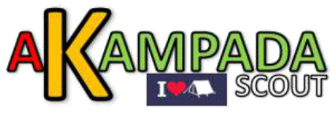

Correo electrónico: akampadascout@gmail.com
Somos un equipo de jóvenes Scouts que desean llevar una información entretenida mes a mes, con las incidencias desde los lugares de los acontecimiento, por lo tanto tu podrás convertirte en corresponsal de tu Grupo Scout, Distrito, Región o País.
Es por eso que deseamos extender esta invitación a cualquier Scout de Manada, Tropa o Clan que desee publicar un comentario, exponer un proyecto o cualquier ocurrencia proactiva en beneficio del Escultismo.